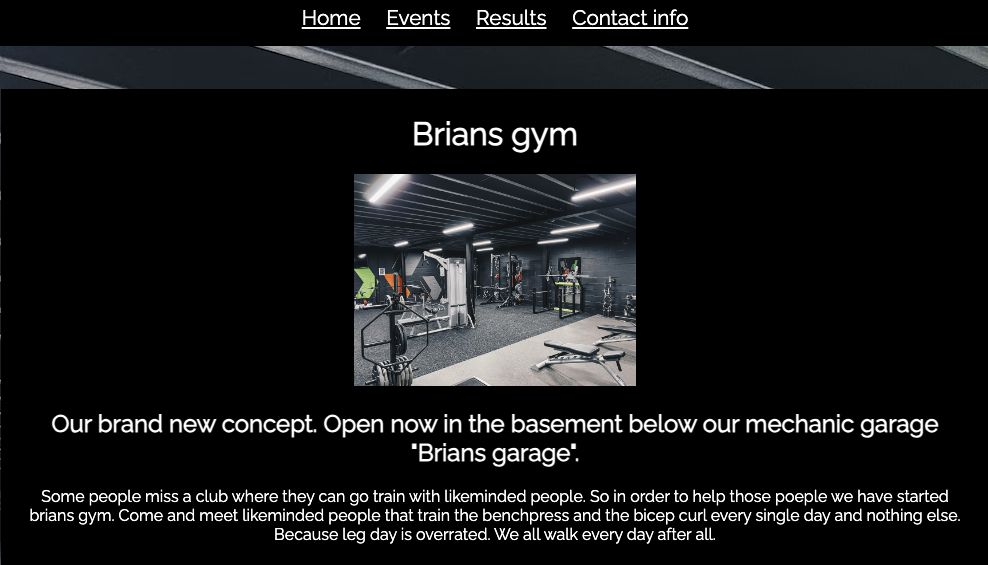
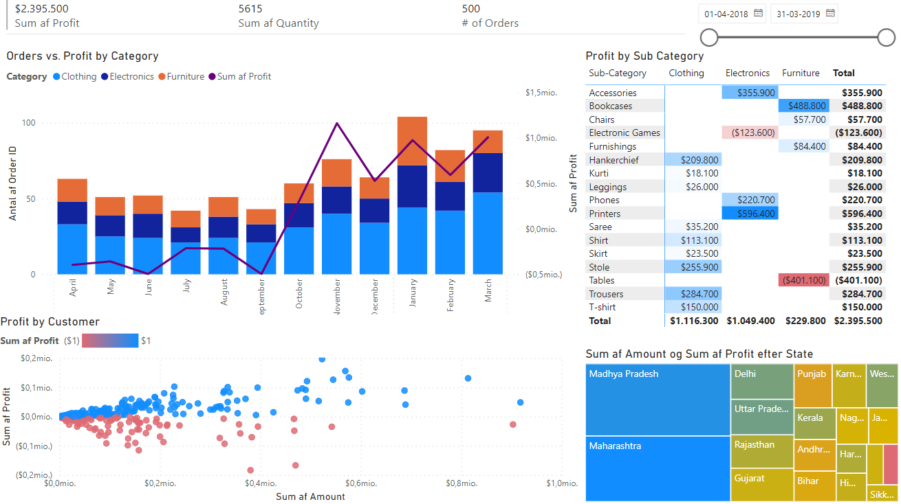
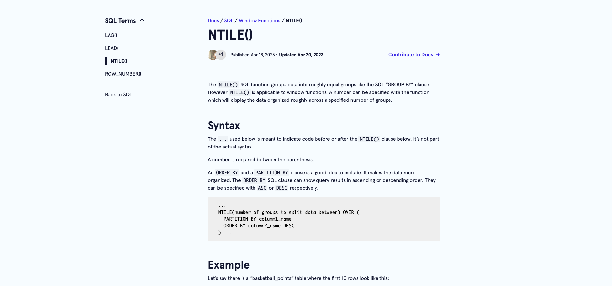

Bigger projects
- Brians Gym website
(a parody club site)
- Power Bi visualization
(Microsoft Power Bi)
- CodeCademy SQL article
(SQL and markdown)

Press/click images below to go to corresponding sites
Brians gym website

Description: This project was an attempt to make a club site. It's also a parody so some sarcasm has been used.
Technologies used: HTML, CSS, VS code text editor, github and github pages.
Power Bi visualization

Description: This project was an attempt to try and visualize an SQL dataset and make it interactive.
Technologies used: Microsoft Power Bi and SQL.
CodeCademy SQL article

Description: This was an attempt to teach other people about a coding concept and work in a public repository with other people.
Technologies used: SQL, GitHub, Markdown, VS code.
Link to markdown file: Click to go to markdown file